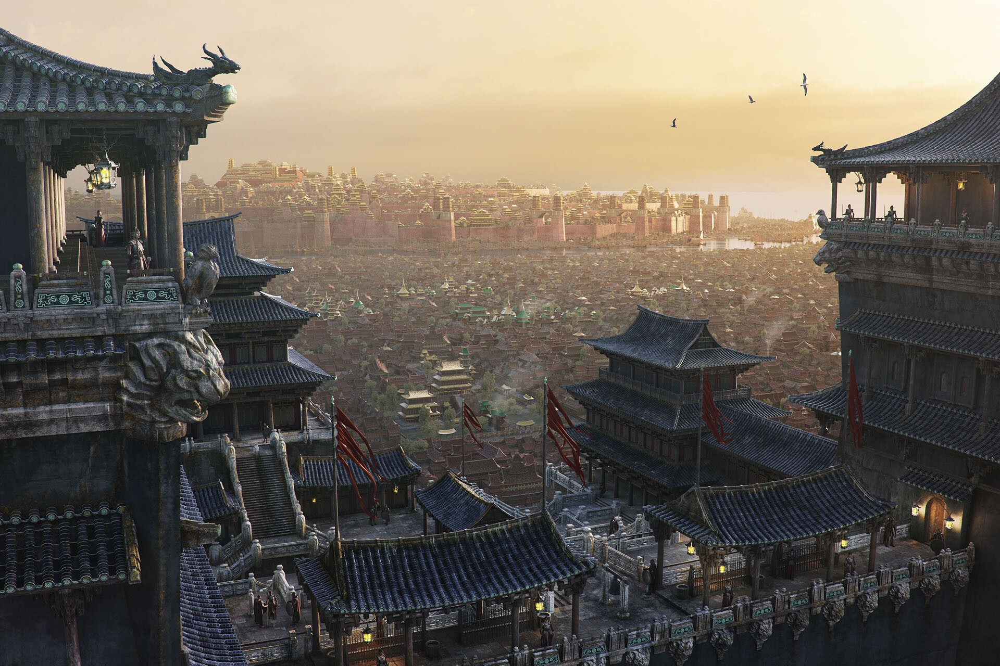

Золотая Империя И-Ти
Государство, зародившееся в регионе И Ти после падения Империи Зари. Западной границей государства служат Костяные горы, на востоке же оно доходит до самых Пяти Крепостей, северной границей служит Торговый Город, на юге же империи подвластен Ленг и некоторые острова в Нефритовом море. Монархическое государство, с наследственной его формой. Мелкими регионами и городами правят свои князья, цари, атаманы и шани, подвластные императору.
